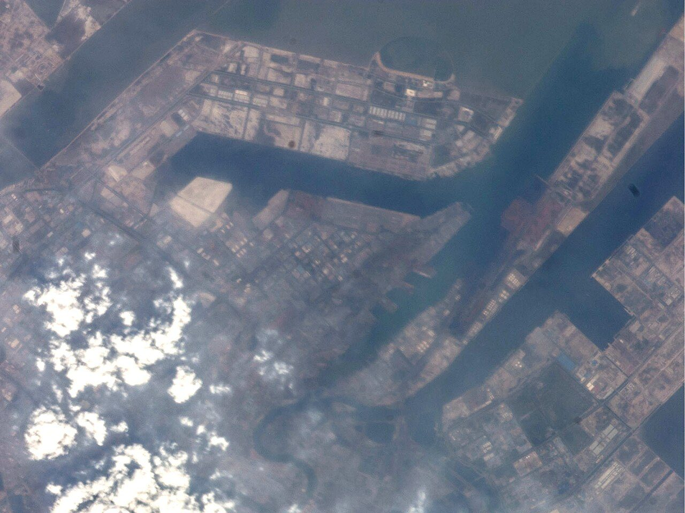
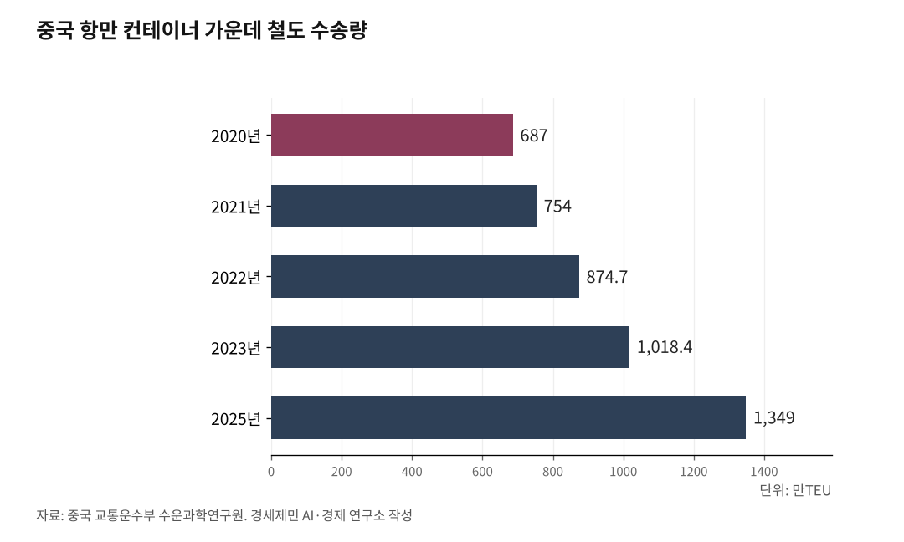

[중국철도⑫] 철도 연결 항만 90%, 컨테이너 철도 몫 중국 3.8% 한국 2.2%
2025년 중국 철도해운 복합운송 1349만TEU, 5년 만에 두 배
한국은 환적 1389만TEU 빼면 4.0%, 분모가 숫자를 가른다
여덟 부처 2026~2030년 행동방안, 컨테이너 개봉 검사 축소 명시
AI경세제민=김갑봉 기자 | 중국 항만이 2025년 한 해 처리한 컨테이너는 3억5400만TEU다. 이 가운데 철도가 실어 나른 몫은 1349만TEU다. 비율로 3.8%다. 구내로 들어가는 철길은 주요 항만 90%에 깔렸는데 그 철길에 오르는 상자는 아직 스물여섯 개에 하나꼴이다.

687만TEU에서 1349만TEU로
철도해운 복합운송(铁水联运, 철수연운)은 항만에서 철도와 배가 컨테이너를 주고받는 운송이다. 중국은 이 물량을 통계공보에 적어 왔다. 2020년 687만TEU, 2021년 754만TEU, 2022년 874만7000TEU, 2023년 1018만3600TEU다.
2025년 물량은 1349만TEU다. 교통운수부 수운과학연구원이 지난 6월 밝혔다. 5년 동안 연평균 증가율은 15%다. 2024년 수치는 통계공보에서 빠졌고 그해 11월까지 1063만TEU라는 교통운수부 책임자 발표만 남았다.
몸집이 아니라 몫을 보면 그림이 달라진다. 물동량으로 나눈 비중은 2022년 2.96%, 2023년 3.29%, 2025년 3.81%다. 집계가 다른 중국컨테이너산업협회는 2024년 1335만TEU, 2025년 1520만TEU로 잡았다.

이미 닿은 철길
하드웨어는 목표를 채웠다. 류웨이 교통운수부 부장이 지난해 7월 밝혔다. 십사오(十四五) 주요 지표 17개 가운데 6개가 2024년에 앞당겨 완성됐다. 주요 항구 구내까지 철길을 넣는 일이 그 여섯에 들었다. 2024년 11월 기준 연해 항만과 창장 간선 주요 항만은 90% 넘게 철길이 닿았다.
환적 성능도 올랐다. 화물 허브 보강 사업을 벌인 도시가 37곳이고 중점 허브 갈아싣기는 한두 번으로 줄었다. 같은 발표에서 1시간 환적률은 85%를 넘어섰다. 배에서 내린 상자를 철도에 얹는 조건은 갖춰진 셈이다.
정부는 한 발 더 나갔다. 교통운수부와 국가철도국과 국철집단은 지난해 9월 일항일책(一港一策) 행동계획을 내놨다. 2027년까지 물량을 해마다 15% 안팎 늘린다.
올해는 판이 커졌다. 교통운수부와 국가발전개혁위 등 여덟 부처가 지난 5월 다식연운 공견 행동방안(2026~2030년)을 냈다. 주요 화물 거점 1000곳 기능을 5년 안에 올린다. 연해 항만 복합운송 항구는 80%, 창장 간선 주요 항만은 100%까지 철길을 넣는다. 1시간 환적률 목표는 90% 초과다.
1위 항만도 철도 몫은 4.6%
닝보저우산항은 2025년 컨테이너 4387만TEU를 처리했다. 같은 해 철도로 주고받은 컨테이너는 200만TEU다. 수출입 컨테이너 복합운송이 전국에서 가장 많은 항만의 몫이 4.6%다. 전국 복합운송의 90%가 환발해와 창장삼각주에 몰려 있다.
준비가 모자라 4.6%에 머문 것이 아니다. 노선 113개가 16개 성 70개 지급시로 뻗는다. 내륙 무수항 40곳도 거느린다. 올해 1~4월은 67만9000TEU로 7.4% 늘었고 닝보시 목표는 220만TEU다.
돈도 오래 들어갔다. 닝보시는 2009년 전국에서 가장 먼저 지방 부양정책을 냈다. 2023년까지 푼 재정보조가 6억7000만위안이다. 상자량은 2009년 1690TEU에서 2023년 165만2000TEU로 뛰었다. 닝보대 좡루룽(庄汝龙) 연구진 집계다.
서류는 한 장으로, 상자는 그대로
다음으로 정부가 잡은 것은 서류와 상자다. 일단제(一单制)는 위탁과 결제와 보험을 한 번에 끝내고 전 구간을 한 주체가 책임진다. 일상제(一箱制)는 중간에 상자를 열거나 바꾸지 않고 한 상자로 끝까지 간다. 여덟 부처가 2023년 공동 의견으로 두 방식을 요구했다. 국가 십오오(十五五) 규획강요에도 들어갔다.
상자 쪽이 먼저 자리를 잡았다. 지난 6월 기준 일상제 비율은 55% 안팎이고 물량은 700만TEU를 넘었다. 서류 쪽은 지역이 쏠린다. 선하증권을 내륙까지 늘려 쓰는 CCA는 80% 이상이 창장삼각주에 있다.
철도 쪽 상품은 이제 걸음마다. 국철집단은 2025년 2월 해운사 넷과 95306 일단제를 내놓았다. 해운사 11곳과 항만기업 15곳으로 넓혔다. 통로 여섯에 상품 243개를 올렸고 누적 발송은 5만여TEU다.
컨테이너 개봉 검사와 체화료
교통운수부가 꼽은 병목은 법규와 데이터와 표준과 운영이다. 현장에서 가장 자주 걸리는 것이 개봉 검사다. 각 철도국은 국내 화물 복합운송 컨테이너의 2~20%를 열어 보는데 폭이 제각각이다. 상자를 한 번 열면 일상제는 그 자리에서 깨진다.
상자를 돌려주는 일도 걸린다. 해운 컨테이너는 항만에서 7~14일을 공짜로 쓰는데 철도로 내륙에 가면 그 안에 돌려주기 어렵다. 기한을 넘기면 체화료가 붙는다. 새 행동방안은 안전검사 최적화와 일단제 절차 표준화를 5년 목표에 적었다.
보조금이 듣는 거리
학계 실증은 정책이 듣는 구간을 좁게 본다. 마웨이광(Ma Weiguang) 연구진은 역·월 자료에 다기간 이중차분법을 걸었다. 운임 보조금은 시차를 두고 오래 갔고 열차 증편은 빠르지만 짧게 끝났다. 두 정책 모두 단거리에서 뚜렷했고 거리가 멀수록 약해지거나 음으로 돌아섰다.
수단을 갈라 본 연구도 있다. 쉬하오난(Xu Haonan) 연구진은 보조금과 무수항 건설을 나란히 모형에 넣었다. 보조금은 여러 운송인에 두루 이로웠고 탄소도 줄였으나 사회후생은 깎였다. 무수항은 철도 쪽 수익만 올리고 도로와 수운 쪽 수익을 떨어뜨렸다.
비용 쪽 진단은 또 다르다. 좡루룽 연구진은 300㎞를 넘으면 철도와 수로가 유리하다고 적었다. 다만 중단거리에서는 갈아싣는 단계가 많아 종합 운송비가 도로보다 낮지 않다고 적었다. 보조금이 듣는 거리와 비용이 맞는 거리는 어긋나 있다.
환경 쪽 계산도 있다. 리산(Li Shan) 연구진은 아홉 개 성 허브항을 살폈다. 복합운송이 1만TEU 늘 때마다 수송 탄소배출이 0.162% 줄었다.
한국은 분모에 따라 2.2%도 4.0%도 된다
한국은 어떤가. 2024년 전국 항만이 다룬 컨테이너는 3173만TEU다. 이 가운데 철도가 나른 것은 70만TEU로 2.2%다. 국내 화물 전체로 넓히면 철도 몫은 1%까지 내려간다.
분모를 바꾸면 그림이 달라진다. 같은 해 수출입 물동량은 1768만TEU이고 환적은 1389만TEU다. 환적 상자는 배에서 배로 옮겨 실으니 철길이 닿을 일이 없다. 환적을 빼고 수출입만 분모로 놓으면 철도 몫은 4.0%로 올라간다. 중국의 3.8%와 어깨를 나란히 한다.
거리 조건은 또 다르다. 좡루룽 연구진이 잡은 경계는 300㎞였고 마웨이광 연구진이 본 보조금 효과는 단거리에서 뚜렷했다. 한국 철도 컨테이너의 주축은 부산항과 수도권 내륙기지를 잇는 구간이다. 중국 연구가 그은 선 위에 한국의 국토가 어떻게 놓이는지는 독자가 재어 볼 대목이다.
중국은 부두 안까지 철길을 넣는 일을 먼저 끝내고 서류와 상자 규칙으로 넘어갔다. 한국 철도 화물은 2015년 3709만톤에서 2024년 1973만톤으로 줄었다. 다만 컨테이너만 떼어 보면 2023년 63만TEU에서 2024년 70만TEU로 11.5% 늘었다. 상자는 늘고 전체는 주는 중이다.
※ 이 기사는 AI 프로그램 클로드를 활용해 작성했습니다.
참고문헌
· "实施多式联运攻坚 打通堵点卡点行动方案（2026—2030年）"(交规划发〔2026〕51号), 중국 교통운수부·국가발전개혁위원회·재정부·자연자원부·국가철도국·중국민항국·국가우정국·중국국가철도그룹, 2026.6.15., https://xxgk.mot.gov.cn/jigou/zhghs/202606/t20260615_4207537.html
· "推动集装箱铁水联运「一单制」「一箱制」高质量发展", 중국 교통운수부 온라인 방담, 2026.6.16., https://www.mot.gov.cn/hudong/zaixianfangtan/202606/t20260615_4207547.html
· "2026年上半年交通运输经济运行情况", 중국 교통운수부, 2026.7.22., https://xxgk.mot.gov.cn/jigou/zhghs/202607/t20260721_4210106.html
· "国新办举行新闻发布会 介绍推进水运高质量发展有关情况"(리싱후 교통운수부 부부장 발언, 2025년 복합운송량 1349만TEU 확인), 국무원 신문판공실 도문실록(베이징일보 전재), 2026.6.30., https://xinwen.bjd.com.cn/content/s6a43886fe4b03fa51a80a866.html
· "2025年交通运输行业发展统计公报", 중국 교통운수부, 2026.6.22., https://xxgk.mot.gov.cn/jigou/zhghs/202606/t20260618_4207752.html
· "2024年交通运输行业发展统计公报"(복합운송량 항목 부재를 원문으로 확인), 중국 교통운수부, 2025.6.12., https://xxgk.mot.gov.cn/jigou/zhghs/202506/t20250610_4170228.html
· "2023年交通运输行业发展统计公报", 중국 교통운수부, 2024.6.18., https://xxgk.mot.gov.cn/2020/jigou/zhghs/202406/t20240614_4142419.html
· "2022年交通运输行业发展统计公报", 중국 교통운수부, 2023.6.16., https://xxgk.mot.gov.cn/jigou/zhghs/202306/t20230615_3847023.html
· "2021年交通运输行业发展统计公报", 중국 교통운수부, 2022.5.25., https://xxgk.mot.gov.cn/2020/jigou/zhghs/202205/t20220524_3656659.html
· "2020年交通运输行业发展统计公报", 중국 교통운수부, 2021.5.19., https://xxgk.mot.gov.cn/2020/jigou/zhghs/202105/t20210517_3593412.html
· "截至2024年11月底 全国港口集装箱铁水联运量同比增长约15%", 중국신문망(중앙방송총국 CCTV 인용, 국가발전개혁위 전문 기자회견 교통운수부 관계자 발언), 2025.1.7., https://www.chinanews.com.cn/cj/2025/01-07/10348930.shtml
· "「一港一策」推进集装箱铁水联运深度融合发展行动计划（2025—2027年）"(交水发〔2025〕91号), 중국 교통운수부·국가철도국·중국국가철도그룹, 2025.9.24., https://xxgk.mot.gov.cn/jigou/syj/202509/t20250924_4177224.html
· "关于加快推进多式联运「一单制」「一箱制」发展的意见"(交运发〔2023〕116号), 중국 교통운수부·상무부·해관총서·국가금융감독관리총국·국가철도국·중국민항국·국가우정국·중국국가철도그룹, 2023.8.24., https://xxgk.mot.gov.cn/jigou/ysfws/202308/t20230824_3897902.html
· "综合交通运输体系持续完善，六项主要指标已于去年提前完成", 인민일보(국무원 신문판공실 발표 보도, 베이징시 교육위원회 전재), 2025.7.23., https://jw.beijing.gov.cn/jyzy/gwyxx/202507/t20250723_4155773.html
· "宁波舟山港海铁联运跑出「加速度」", 인민망 저장(중국닝보망 전재, 닝보시 교통운수국 통계), 2026.6.3., http://zj.people.com.cn/n2/2026/0603/c186327-41599476.html
· "外贸支撑坚实 枢纽能级提升，宁波舟山港主业保持稳健增长", 증권시보망(닝보저우산항 2026년 반기보고서 인용), 2026.8.29., https://www.stcn.com/article/detail/4161506.html
· "宁波舟山港海铁联运年业务量首破200万标准箱", 중국신문망(저장성 해항그룹 발표), 2025.12.26., https://www.chinanews.com.cn/cj/2025/12-26/10540808.shtml
· "2025年港口货物、集装箱吞吐量"(닝보저우산항 컨테이너 4387만TEU·화물 14억3192만톤), 중국 교통운수부, 2026.1.30., https://xxgk.mot.gov.cn/jigou/zhghs/202601/t20260130_4199411.html
· "「箱」当硬核！宁波舟山港年集装箱吞吐量首次突破4000万箱", 제일재경(第一财经, 중앙방송총국 CCTV 인용), 2025.12.2., https://www.yicai.com/news/102936899.html
· "「十四五」全国港口集装箱铁水联运复合年均增长近两成", 제일재경, 2026.5.21., https://www.yicai.com/news/103195071.html
· "我国多式联运总体规模继续攀升"(중국컨테이너산업협회 리쥔 상무부회장의 《中国集装箱多式联运发展报告（2024）》 발표. 2024년 복합운송량 1335만TEU), 신화사, 2025.4.24., http://www.news.cn/politics/20250424/20c0dc750c44480ea0ca1ce62b703218/c.html
· "打通物流供应链上的堵点——来自2025中国多式联运合作大会上的观察"(2024년 연해 1263만TEU·내하 72만TEU, 환발해와 창장삼각주 집중도 90%), 신화사, 2025.4.25., http://www.news.cn/fortune/20250425/b20b2acd310a4fae83a887032a994a98/c.html
· 庄汝龙·杨洁·职梦露, "面向现代物流体系的浙江海铁联运的历程、挑战与优化路径", 중국해양대학보 사회과학판(中国海洋大学学报 社会科学版) 2025년 1기 42-51쪽, 2025.1., https://html.rhhz.net/ZGHYDXXBSHKXB/html/20250104.htm
· Ma, Weiguang·Huang, Lei·Song, Rongjia·Zhang, Xiong·Wang, Ying·Zhang, Qianyao(베이징교통대 경제관리학원 외), "Unpacking the Effects of Heterogeneous Incentive Policies on Sea-Rail Intermodal Transport: Evidence from China", Systems 13권 9호 764(DOI 10.3390/systems13090764), 2025.9.1., https://www.mdpi.com/2079-8954/13/9/764
· Xu, Haonan·Liu, Jiaguo·Qi, Siwen, "Incentive policy for rail-water multimodal transport: Subsidizing price or constructing dry port?", Transport Policy 150권 219-243쪽(DOI 10.1016/j.tranpol.2024.03.007), 2024., https://ideas.repec.org/a/eee/trapol/v150y2024icp219-243.html
· Li, Shan·Wu, Jianhong·Jiang, Yonglei·Yang, Xutao, "Impacts of the sea-rail intermodal transport policy on carbon emission reduction: The China case study", Transport Policy 158권 211-223쪽(DOI 10.1016/j.tranpol.2024.09.019), 2024., https://ideas.repec.org/a/eee/trapol/v158y2024icp211-223.html
· "컨테이너 수송실적"(철도 2024년 70만3746TEU, 2023년 63만995TEU. 원자료 코레일), 국토교통부 국가물류통합정보센터, 2026.9.22. 조회, https://www.nlic.go.kr/nlic/frghtRail0040.action
· "화물 수송실적"(철도 2024년 1973만3931톤, 2015년 3709만3642톤. 원자료 코레일), 국토교통부 국가물류통합정보센터, 2026.9.22. 조회, https://www.nlic.go.kr/nlic/frghtRail0010.action
· "2024년, 국내 항만 역대 최대 컨테이너 물동량 3,173만TEU 처리"(부산항 2440만TEU, 인천항 356만TEU, 광양항 201만TEU), 해양수산부 항만물류기획과, 2025.1.23., https://www.mof.go.kr/doc/ko/selectDoc.do?docSeq=60146&bbsSeq=10&menuSeq=971
· "수송현황"(철도 화물 품목별 수송량. 2025년 컨테이너 854만6000톤), 한국철도공사, 2026.9.22. 조회, https://info.korail.com/info/contents.do?key=871
사진 출처
· [대표사진] 美国宇航局的原创作品, "Port of Tianjin ISS036-E-35032.jpg", 위키미디어 공용, 퍼블릭 도메인, https://commons.wikimedia.org/wiki/File:Port_of_Tianjin_ISS036-E-35032.jpg
※ 이 기사는 인공지능을 활용해 작성했습니다.
관련기사
- 중국-유럽 화물열차 동부 통로, 올해 2000편 돌파…화물량 44.8% 급증
- 한국 대륙 철도 다섯 통로, 북한 못 지나면 무용지물
- 中, 국내 6만km 고속철도망·국외 대륙철도 13만편 동시 확대
- [중국철도⑪] 중국·키르기스·우즈베크 철도, 착공 2년에 공정률 목표 5%
저작권자 © AI경세제민 무단전재 및 재배포, AI학습 및 활용 금지